Sistemas web que generan resultados reales
Cada proyecto es desarrollado como un sistema de conversión: optimizado para atraer, convencer y convertir usuarios en clientes. Aquí no mostramos diseños… mostramos plataformas construidas para generar crecimiento y ventas.
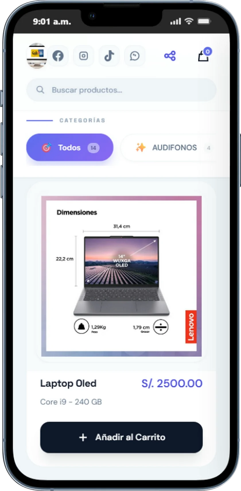
Tech Store's
Tienda virtual diseñada para marcas y negocios que buscan maximizar sus ventas online y ofrecer una experiencia de compra moderna, rápida y segura. Permite exhibir productos de forma atractiva con imágenes de alta calidad, descripciones optimizadas y precios claros, además de integrar carrito de compras, múltiples métodos de pago y gestión de pedidos en tiempo real. Optimizada para generar confianza, mejorar la tasa de conversión y facilitar que los clientes encuentren, elijan y compren productos de manera sencilla desde cualquier dispositivo.
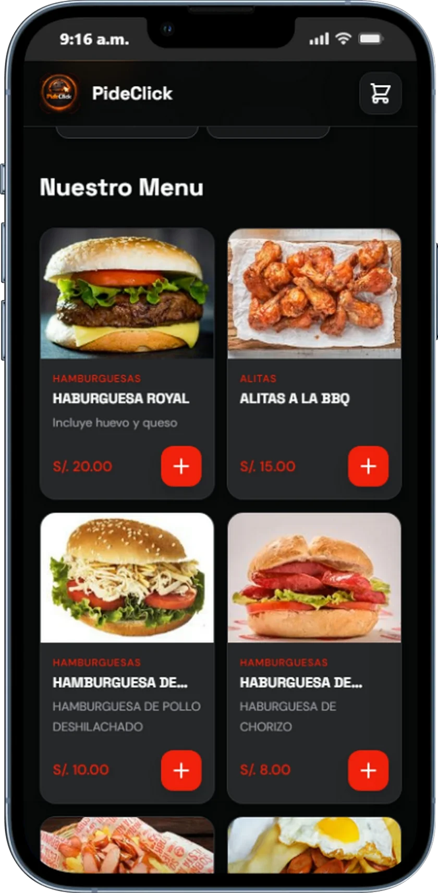
Fats Food Mathias
Menú digital con código QR diseñado para restaurantes y negocios gastronómicos que buscan agilizar la atención y aumentar sus ventas. Permite a los clientes acceder al menú desde su celular sin necesidad de contacto físico, visualizar productos con imágenes atractivas, descripciones claras y precios actualizados en tiempo real. Integra sistema de pedidos y gestión de compras, facilitando la toma de órdenes de manera rápida, reduciendo errores y optimizando el flujo de atención. Optimizado para brindar una experiencia moderna, segura y eficiente que mejora la rotación de clientes y potencia las ventas.

PideClick
PideClick es una plataforma SaaS diseñada para la optimización integral de restaurantes, permitiéndoles digitalizar y automatizar la gestión de pedidos en tiempo real. Facilita una experiencia de compra rápida, intuitiva y sin fricciones para los clientes, mientras incrementa las conversiones, reduce errores operativos y mejora la eficiencia del negocio. Ideal para restaurantes que buscan escalar sus ventas mediante tecnología moderna y procesos inteligentes.
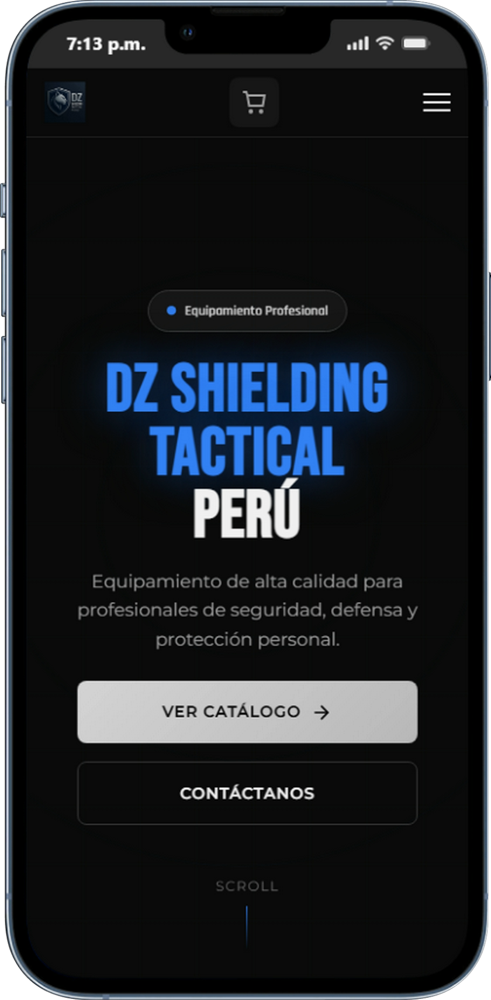
Tienda Táctica
Tienda virtual diseñada estratégicamente para maximizar el ticket promedio y potenciar las ventas online. Ofrece una experiencia de compra optimizada para dispositivos móviles, con navegación intuitiva, carga rápida y procesos de pago simplificados. Ideal para negocios que buscan aumentar conversiones, fidelizar clientes y escalar sus ingresos mediante una plataforma moderna y eficiente.

Taller Mecánico
Plataforma digital diseñada para talleres mecánicos que buscan captar más clientes y optimizar la gestión de servicios. Permite a los usuarios agendar citas en línea de forma rápida y sencilla, consultar servicios disponibles y recibir atención eficiente. Incluye funcionalidades orientadas a mejorar la organización del taller, reducir tiempos de espera y aumentar la satisfacción del cliente mediante una experiencia moderna y confiable.
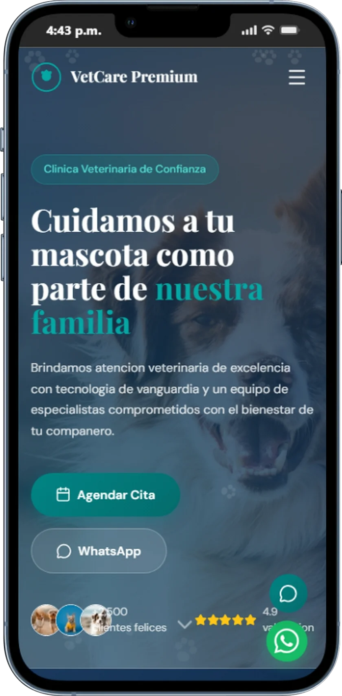
Gestión de Veterinaria
Sistema web especializado para clínicas veterinarias, diseñado para optimizar la gestión de citas, historiales médicos de mascotas y atención al cliente en tiempo real. Permite agendar consultas fácilmente, llevar un control detallado de tratamientos y mejorar la comunicación con los dueños, brindando una experiencia más organizada, eficiente y confiable para el cuidado de cada mascota.
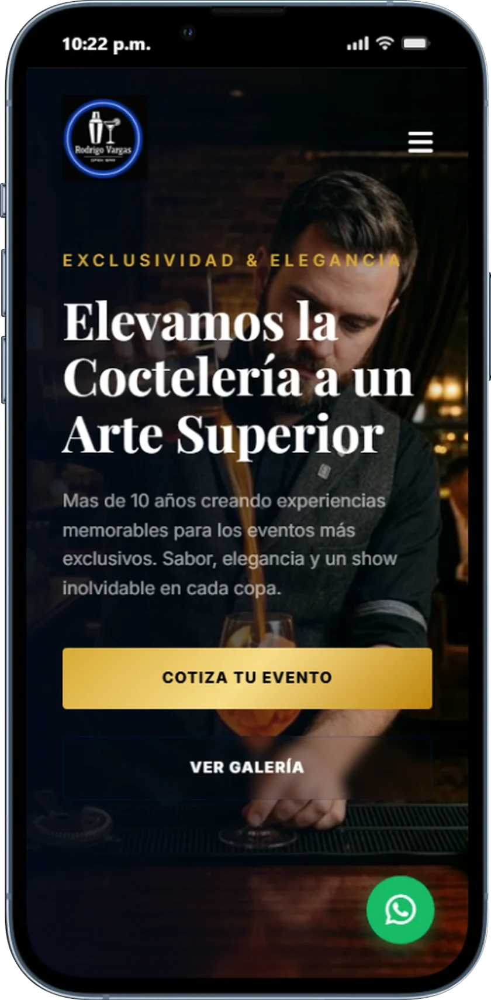
Bartender Profesional
Sitio web diseñado para bartenders profesionales que buscan destacar sus servicios y captar clientes para eventos exclusivos. Permite mostrar menús de coctelería, paquetes personalizados y experiencias únicas, además de facilitar la reserva de fechas en línea. Optimizado para generar impacto visual, transmitir confianza y convertir visitas en contrataciones para eventos sociales y corporativos.
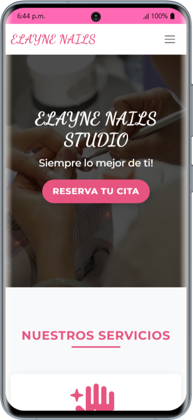
Salón de Manicure & Pedicure
Landing page diseñada para salones profesionales de manicure y pedicure que buscan atraer más clientas y destacar sus servicios. Permite mostrar catálogos de diseños, promociones y paquetes de belleza, además de facilitar la reserva de citas en línea de forma rápida y sencilla. Optimizada para transmitir elegancia, confianza y brindar una experiencia visual atractiva que convierta visitas en reservas.
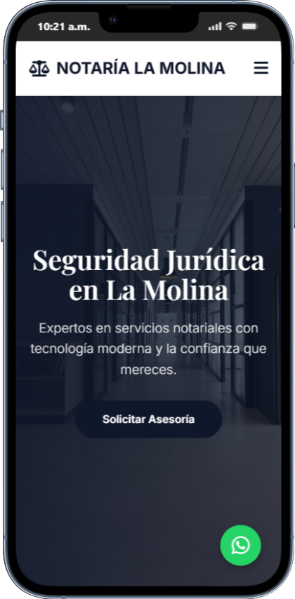
Notaría
Landing page diseñada para notarías que buscan proyectar confianza, profesionalismo y captar nuevos clientes. Permite mostrar servicios notariales, requisitos, costos referenciales y facilitar la solicitud de citas en línea de manera rápida y segura. Optimizada para brindar claridad en la información, mejorar la atención al cliente y convertir visitas en trámites efectivos.
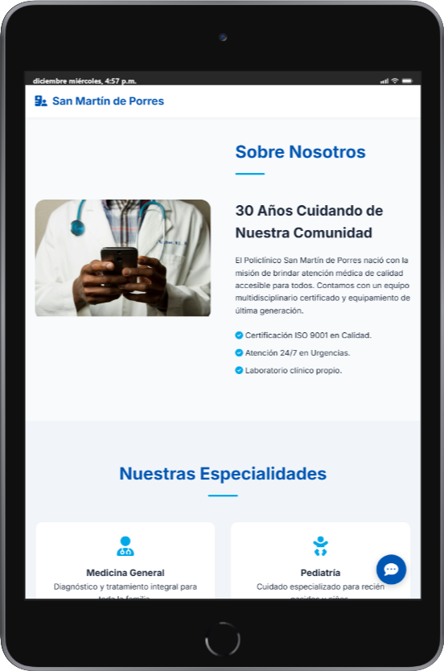
Policlínico
Landing page diseñada para policlínicos que buscan brindar información clara sobre sus especialidades médicas y captar nuevos pacientes. Permite mostrar servicios de salud, staff médico, horarios de atención y facilitar la reserva de citas en línea de manera rápida y segura. Optimizada para transmitir confianza, profesionalismo y mejorar la experiencia del paciente desde el primer contacto.
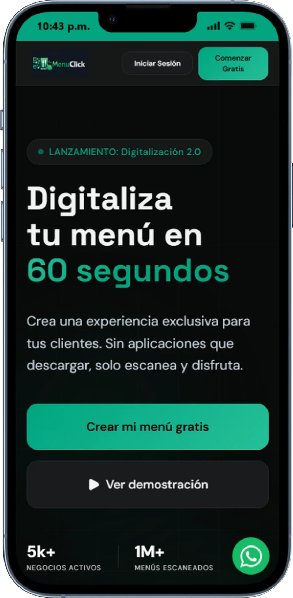
MenuClick
Plataforma SaaS diseñada para restaurantes que desean digitalizar su carta de menú y mejorar la experiencia del cliente mediante códigos QR. Permite visualizar menús en tiempo real desde cualquier dispositivo, actualizar productos fácilmente y reducir el uso de cartas físicas. Optimizada para agilizar pedidos, mejorar la presentación del negocio y ofrecer una experiencia moderna, rápida y sin contacto.
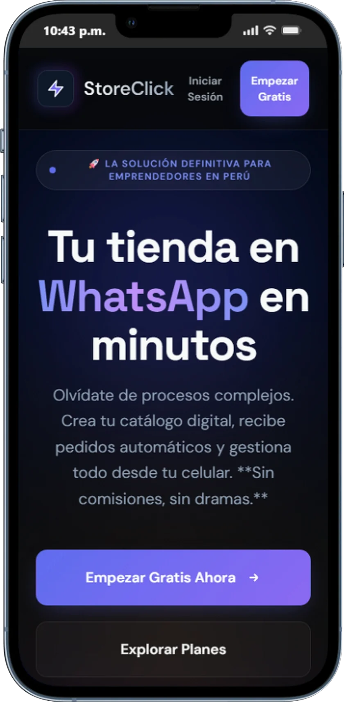
StoreClick
Plataforma SaaS diseñada para crear y gestionar tiendas virtuales de forma rápida y profesional, sin necesidad de conocimientos técnicos. Permite administrar productos, pedidos y clientes desde un solo lugar, con interfaces optimizadas para maximizar conversiones y ventas. Incluye herramientas para personalización, pagos en línea y una experiencia de compra fluida, ideal para emprendedores y negocios que buscan escalar en el mundo digital.
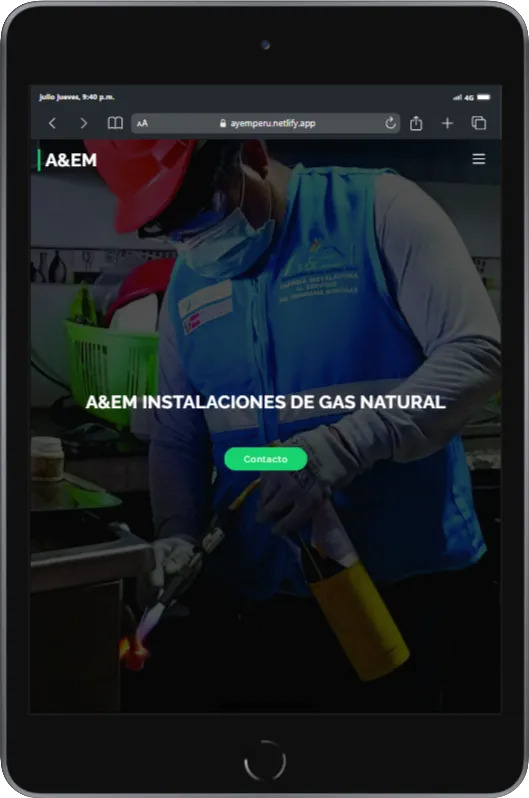
A&EM INSTALACIONES DE GAS NATURAL
Landing page diseñada para empresas instaladoras de gas natural que buscan generar confianza y captar nuevos clientes. Permite mostrar servicios de instalación, mantenimiento y certificación, así como detallar procesos, beneficios y normativas de seguridad. Optimizada para transmitir profesionalismo, garantizar tranquilidad al cliente y facilitar el contacto o solicitud de cotizaciones de manera rápida y efectiva.
Convierte tu web en un sistema que
genere clientes de forma automática
Diseñamos plataformas optimizadas para transformar visitas en ventas. Si tu negocio aún no tiene un sistema de conversión, estás perdiendo oportunidades cada día.
Respuesta rápida • Diagnóstico sin compromiso